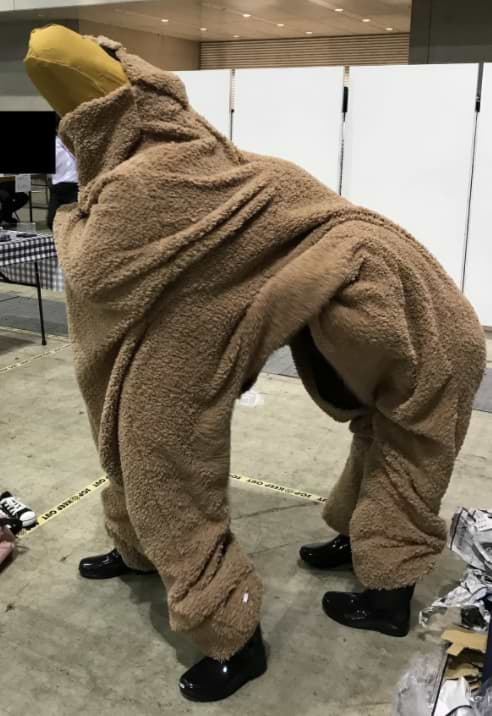

SCP-1545
Item #: SCP-1545
Object Class: Safe
Special Containment Procedures: SCP-1545 is to be kept in Containment Locker 1545 at Site 40, with access barred to all personnel with a clearance level under three (3). Following Incident 1296-1545, testing of SCP-1545 with additional anomalous objects requires approval of personnel with a clearance level of four (4) on a case by case basis. No other containment procedures are necessary at this time.
Description: SCP-1545 is a two-person llama costume wearing galoshes. SCP-1545 can be opened along its midsection. Its interior is consistent with an average costume of its type, with space for two people, one with their legs in the rear legs, bending over into the midsection, and the other standing in the front with their two legs in the costume's front legs, standing straight up through the costume's neck. A tag near the costume's rear refers to it as "Larry the Loving Llama."
SCP-1545's anomalous effects do not become apparent until it is worn. Subjects wearing SCP-1545 will become extremely "in character", with the frontal person speaking as if they were "Larry the Loving Llama" and the rearward person performing various jigs. SCP-1545 behaves in an extremely docile manner.
Subjects inside SCP-1545 are not physically able to exit SCP-1545 without being pulled out, and show no desire to do so, although they will not resist removal. Unless forcefully removed from SCP-1545, subjects will continuously act as "Larry the Loving Llama" until they expire1. Subjects with a dead partner will still act as their appropriate half until they also expire. Removed subjects show memory of their time within SCP-1545; however, they show no knowledge of its anomalous properties. Subjects do not show any negative attitude towards their time inside SCP-1545, instead behaving as if their actions were typical.
SCP-1545 was discovered by authorities in [REDACTED] in an abandoned suburban home. Victims had died from dehydration. Autopsy indicated that the rearward operator had died 1 day earlier, and had severe bruising on her body from being dragged throughout the household by the frontal partner. SCP-1545 was confiscated by Foundation personnel after its anomalous properties had been discovered. Class-A amnestics were administered.
Addendum: Audio log 1545-A:
Interviewed: D-5362, having just been removed from SCP-1545
Interviewer: Dr. Fredericks
Foreword: Subject had been inside SCP-1545 for approximately 3 hours
<Begin Log>
Dr. Fredericks: Hello, D-5362.
D-5362: Good afternoon, sir.
Dr. Fredericks: How are you feeling?
D-5362: A little exhausted, sir.
Dr. Fredericks: Oh yes, I saw all that dancing around. Must have gotten tiring!
D-5362: It was, sir, but you have to keep the people entertained!
Dr. Fredericks: But surely you considered leaving to get a drink.
D-5362: Can't do that, sir. It would ruin the illusion.
Dr. Fredericks: It's a talking llama wearing rain boots, what kind of illusion is that?
D-5362: Well… You just don't know Larry the Loving Llama like I do, sir.
<End Log>
Audio log 1545-B
Interviewed: D-5483, voicing "Larry the Loving Llama"
Interviewer: Dr. Fredericks
Foreword: Subject has been inside SCP-1545 for two days. Voice was extremely raspy due to dehydration.
<Begin Log>
Dr. Fredericks: Hello, D-5483.
D-5483: Oh, I'm not James! I'm Larry the Loving Llama!
Dr. Fredericks: Okay… Larry, how are you feeling?
D-5483: Super-dee-dooper, doctor! My bum's a bit sluggish today, but that's okay! ((Note: D-5484, SCP-1545's rearward operator, had expired approximately 2 hours earlier. D-5483 had been dragging D-5484.))
Dr. Fredericks: Larry, are you aware of the men inside you?
D-5483: You mean my helpers?
Dr. Fredericks: Yes, your helpers.
D-5483: My helpers love helping me! Together we bring joy to everyone!
Dr. Fredericks: Are you aware that D-5484 is dead, Larry?
D-5483: He's just taking a nap, doctor.
<End Log>